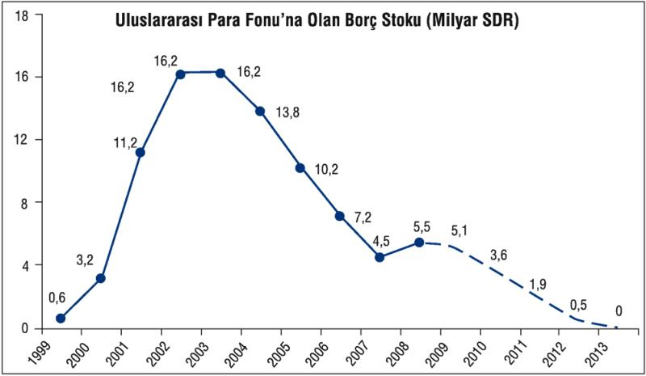
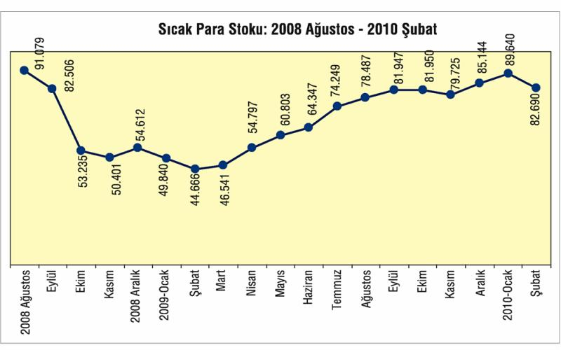

AKP iktidarının 2002'de başlayan icraatında önemli bir yer tutan IMF ile ilişkiler, ilk iktidar yılı olan 2002'den 2007'ye kadar bir "uyum dönemi", 2007 sonrası ise "askı dönemi" olarak adlandırılabilir.
2001 bankacılık krizinin enkazını üstlenen Hazine, IMF ile yapılan stand-by anlaşması ile kullandığı kredileri, finans sisteminin rehabilitasyonu için harcarken, Hazine'ye, oradan da halka yansıyan borçları geri ödemek için uzun yıllar "mali disiplin" uygulandı. AKP iktidarı, 2002 sonlarında iş başına gelince IMF anlaşmalarına sadık kaldı ve bu anlaşmaların sadık bir uygulayıcısı oldu. Bütçede uygulanan mali disiplin ve özelleştirme gelirleriyle IMF borçları ödendi; 2002'deki 16,2 milyar SDR olan IMF borcu, 2009'da 5,5 milyar SDR'ye kadar düştü.

Kaynak: IMF, Hazine Müşteşarlığı
Küresel krizin etkisi altına girilen Ekim 2008'de yoğun bir sıcak para çıkışı oldu. Bu durumun devamından endişe duyan AKP iktidarı, IMF ile yeni bir stand by anlaşması için görüşmeler başlattı. Ekim 2008 için sıcak para trafiği, yani devlet tahvili, borsa ve mevduat olarak yatırımda olan yabancı yerleşiklerin yatırımları, dışa çıkış biçiminde gerçekleşti. Bu çıkışın tutarı 5, 6 milyar doları bulurken sıcak para stoku 53 milyar dolara kadar düştü. Çıkış, Kasım ve 2009'un ilk 2 ayında da sürdü. Bu tarihe kadar IMF ile bir anlaşma ihtimali arttı. Ancak Mart 2009'dan itibaren sıcak para trafiği "giriş" yönlü değişti, 2009 sonunda kriz öncesi seviyeye çıktı. Bu dönüşte çeşitli etkenler rol oynadı. IMF ile görüşmeler sıcak para yatırımcılarına güven verirken, dünyada sıcak paranın gönül rahatlığı ile gideceği seçenek sayısı azaldı ve Türkiye görece emin bir liman gibi görüldü.

İzleyen aylarda sıcak para girişinin devam etmesi, AKP hükümetini IMF ile anlaşmadan uzaklaştırdı. Bunda, AKP'nin sırtını dayadığı cemaat kapitalizminin tercihleri de etkili oldu.
2007 sonrası IMF ile yeni bir anlaşmaya gitme konusunda istekli görünmeyen AKP iktidarı, 2010 Martında IMF ile yeni bir anlaşma yapılmayacağını açıkladı. Bu askıya alınan ilişkinin arka planını anlamak için, AKP iktidarının dayandığı hakim sınıf bileşenlerini iyi tahlil etmek gerekir.
Türkiye siyaset ve iktisat tarihini analiz edenler, 2002 seçimleri ile AKP'nin iktidara gelişini ve icraatını, önemli bir kilometretaşı olarak alacaklardır. Bu tarihi kırılma, aslında, Türkiye toplumsal formasyonuna yön veren egemen sınıf blokları arası güç değişimi için derinleşen bir iktidar savaşıdır. Bilek güreştiren taraflardan biri, İslami-muhafazakar sermaye fraksiyonlarının siyasi temsilcisi AKP-Fethullah Gülen koalisyonudur. Bu kesimin dayandığı sermaye fraksiyonu, resmi olarak TOBB bünyesindeki çoğu odada; "sivil" olarak da MÜSİAD ve TUSKON'da örgütlü, bir kısmı KOBİ, bir kısmı da iri-kıyım sermayedarlardır. Bunlara "Anadolu kaplanı" denmesi eksiktir. İstanbul'daki sanayi, ticaret ve hizmet varlıkları ağırlık taşır.
Bilek güreşinin diğer tarafında, yine TOBB çatısı altındaki laik sermayedarlar, "sivil" örgütlenmede de TÜSİAD ve eteğinde topladığı orta büyüklükteki laik TÜRKONFED üyesi sermayedarlar vardır. Geleneksel (laik) Türkiye burjuvazisinin başat olduğu blok içinde, diğer müttefikler, laik sivil-asker üst bürokrasidir.
Bu iki hakim blok arasındaki kayda değer en önemli hesaplaşma, 1990'lı yıllarda yaşanmış ve 28 Şubat darbesi sonucu İslamcıların yenilgisiyle sonuçlanmıştı. 1990'lı yıllarda Necmettin Erbakan liderliğindeki Milli Görüş, tek başınaydı ve 1990'da kurulan MÜSİAD, taban sermayedar örgütüydü. Fethullah Gülen cemaati, Erbakan çevresi ile temsiliyet çekişmesi yaşıyordu. Erbakan, anti-küreselleşmeci, millici, Gülen kanadı küreselleşmeciydi.
TÜSİAD–sivil-asker bürokrasi bloku, 28 Şubat 1997'de, yükselmekte olan İslamcı kesimi bir darbe ile geriletti. Ama darbe yarası çabuk sarıldı. İzleyen yıllarda Erdoğan-Gül ikilisi Milli Görüş'ten koparak ve yanlarına eski ANAP'lı muhafazakarları alarak, Gülen ile ittifak içinde AKP'yi 2002'de iktidara taşıdılar. Erbakan'ın 1990'da kurdurduğu MÜSİAD, 2000'li yıllarda, Erbakan çizgisinden koptu ve vizyon değiştirerek neoliberal-küresel çizgiyi benimsedi. Gülen cemaatine dahil sermayedarlar ise örgütlerini 2005'te TUSKON adı altındaki konfederal bir yapıyla genişlettiler ve 80 ilde örgütlendiler.
2002-2007 döneminin likidite bolluğu yaşayan dünya konjonktürü, AKP'li muhafazakarların neoliberal yönelimlerini cesaretlendirdi. Küresel ana firmalarla doğrudan ilişki kuran ihracatçı (tedarikçi) KOBİ'ler, AKP iktidarının da destekleriyle hızla palazlandılar. Aynı dönemin sağladığı hormonal büyümenin saadeti, TÜSİAD çatısı altında örgütlü geleneksel –laik– burjuva kesiminde de, AKP ile yaşanabileceği fikrini güçlendirdi. AKP, IMF ile sürdürdüğü programda parmak ısırtan, emek karşıtı, sıkı özelleştirmeci, anti-kamucu bir neoliberal performansla TÜSİAD'cıları da şaşırtmıştı.
AKP-Gülen koalisyonu hükümet, birinci iktidar döneminde, toplumu muhafazakarlaştıran, İslamcı-muhafazakar taban sermayedarı kollayan-kayıran politikaları çok fazla ön plana çıkarmadı. Dış kaynak bolluğunun rüzgarıyla yaşanan yüksek büyümenin rahatlığı içinde IMF ve AB çıpalarıyla barışık bir iktidar görüntüsü verdi.
Yüzde 50'lere tırmanan bir seçmen desteğinden kaygılanan "laik blok"un sivil-asker bileşenlerini endişelendiren İslami tırmanmaya dönük e-muhtıralı, darbe niyetli hamleler, kitleler nezdinde onay görmedi, ters tepti ve sonuçta AKP'ye, hem Çankaya'yı hem de ikinci bir iktidar dönemini, yüzde 47 oy üstünlüğü ile sundu.
Kazanılan bu muharebelerle, AKP, 2007 sonrası, toplumu muhafazakarlaştırma projeleri için daha atak oynama cüreti de buldu. Karşı blokun bileşenlerinden sivil-asker bürokrasiyi geriletmek üzere Ergenekon davası, çeşitli itibarsızlaştırma operasyon ve hamleleri bir birini izledi. TSK'yı itibarsızlaştırma, yargıyı yürütmeye tabi kılma çabaları yoğunlaşırken sermaye ayağında da TÜSİAD'ı etkisizleştirme, buna karşılık MÜSİAD ve TUSKON'u öne çıkarma çabaları arttı. TÜSİAD'ın lider gruplarından Doğan'a hem medyasını hem ekonomik gücünü kırmak üzere yapılan vergi operasyonları, diğer TÜSİAD'cıları sindirmeye yetti. Doğan'a sahip çıkamayan, onunla dayanışamayan TÜSİAD üyeleri, benzer baskılara maruz kalabileceklerinden endişe ettiler; enerji, gayrimenkul vb. sektörlerindeki özelleştirme, ihale süreçlerinde kara listeye alınmaktan çekinip sindiler.
AKP, ikinci iktidar döneminde daha fütursuzca "yandaş sermayedar"ı güçlendirme ataklarına girdi. Damadının yönettiği Çalık Holding'i hem medya sektöründe hem de enerji sektörlerinde doğrudan destekledi. Medyada yeni cemaat kanalları, artırılan TRT, AA, RTÜK kontrolleri ile gücünü tahkim etmekle kalmadı, rakiplerinden Doğan'ı küçülmeye zorlayacak hamleler yaptı. Birçok TÜSİAD üyesini de havuç-sopa yöntemleriyle biata zorladı ve önemli ölçüde başardı. AKP-Gülen iktidarının, karşı iktidar blokunun bileşenlerinden TSK ve yargı ile bilek güreşinin nasıl sonuçlanacağını önümüzdeki günler gösterecek. Sermaye birikimi sürecinde, "cemaat kapitalizmi" yapılanmasını tahkim eden ve kriz koşullarında koruyan yaklaşımlar ise IMF ile ilişkilerde iyice belirginlik kazandı.
AKP Hükümetinin, IMF ile yeni bir stand-by anlaşması için sürdürdüğü girişimlerdeki tutumu, cemaat kapitalizmini nasıl önemsediğini ve her politikada cemaat kapitalizminin önceliklerinin esas olduğunu da sergiledi. Nedir bu cemaat kapitalizmi?
Kapitalizmin muhtelif dönemlerinde muhtelif ülkelerde "eş-dost kapitalizmi"nin geçerli olduğu evreler olmuştur. İngilizcesi "crony capitalism" veya kısaca "crapitalism" olan bu tarzda, iş dünyası-siyaset-bürokrasi ilişkileri giriftleşir ve sermayedarların bazıları daha çok kayırılır.
Eş-dost kapitalizminin örnekleri, özellikle 1980 sonrası Türkiye'sinde sıkça yaşandı. AKP iktidarında da bu kişisel kayırılmanın örnekleri var. Maliye eski bakanı Unakıtan'ın oğluna, Başbakan'ın damadının şirketlerine sağlanan avantajlar, kayırmalar birkaç örnek. Daha kurumsal olanı ise AKP ve Fethullah Gülen cemaatini oluşturan koalisyonun dayandığı muhafazakar sermayedarları toptan kollayan bir kayırmacılık... Bu kesimin örgütleri olan MÜSİAD ve TUSKON'un, İslamcıların yönetiminde söz sahibi olduğu TOBB odaları ve Türkiye İhracatçılar Meclisi'nin yaklaşımları, hükümetin makro politikalarını doğrudan belirliyor.
Bu örgütlerde politika üreten "cemaat kapitalistlerinin profili" şöyle özetlenebilir:
• Çoğu, İstanbul ve Anadolu'da dayanıklı-dayanıksız tüketim malı üreten KOBİ sanayicileri ve üretimlerinin bir kısmı ihracata dönük. Bir kısmı küresel firmalarla birebir ilişki içinde ve tedarikçi durumdalar. Çoğunlukla sendikasız, güvencesiz işçi çalıştırıp bu ucuz emeğin sağladığı avantajla dış rekabet gücü sağlamaya çalışıyorlar.
• Çoğu, "Faizsiz banka" diye bilenen katılım bankacılığı kesimi ile iş yapıyor ve bu finans kurumlarının etkinleştirilmesini, güçlendirilmesini; büyük bankaların ise kuşatılmasını istiyorlar.
• Çoğu, AKP yönetimindeki belediyelerin, yatırım tutarı 35 milyar TL'yi bulan, her tür kamusal denetimden uzak tutulmuş, Başbakan'a bağlı TOKİ'nin projelerinden şöyle veya böyle pay alıyorlar. Toplamda 500 bini bulan bu konut-sosyal donatı projelerinde, kimi müteahhit, kimi girdi tedarikçisi, taşeron olarak rol aldı, alıyor.
• Özelleştirilen irili-ufaklı kuruluşlarda, enerji özelleştirmeleri ve lisans alımlarında avantajlılar. Kamunun sağlıktan eğitime çeşitli harcamalarında mal tedarikçisi, taşeron olarak pay alıyorlar. Kamu hizmetlerinin ticarileşmesi, özelleşmesinde öncelikle kayırılıyorlar.
Cemaat kapitalizmi de, haliyle, küresel krizden etkilendi. Yüzde 30 azalan ihracattaki gerileme onları da vurdu. Daralan iç talep, özellikle gıda dışı tüm sektörlerde, onları da zora soktu. Hükümetin ÖTV-KDV indirimleri ile kısmi desteklerden onlar da yararlansa, esas desteği, sürdürülen kamu harcamalarında aradılar. Tam da burada, IMF'nin yapılacak bir stand-by anlaşmasında kamu harcamalarının denetlenmesi ve kısılması önlemi, cemaat kapitalizminin kurgusuyla çatıştı. Yine bu kesime de yarayacak vergi ve SGK prim afları niyetlerine IMF'nin soğuk duruşu, vergi denetiminin bir sopa olarak kullanılmasını engelleyecek vergi denetiminin özerkleştirilmesi isteği, AKP iktidarının ve ardındaki cemaat kapitalizminin IMF ile mesafeli durmasında etkili oldu.
Cemaat kapitalizmi, küresel kriz öncesinin hormonal büyümesini özlüyor ve filmin koptuğu yerden devamını diliyor. Büyüme için ihtiyaç duyulan dış kaynağı temin edecek IMF'nin, kredisi karşılığı istediği önlemleri, kendi birikim kurgusunu bozacağı için dışladı, IMF ile anlaşmayı öteletti. Umudu, sıcak paranın Türkiye'ye yönelmesi, bir şok yaşamadan kurun istikrar kazanması ve AB pazarlarının yeniden açılması ve/veya Afrika, Orta Doğu pazarlarından telafi imkanları bulunması. Umudu, TOKİ, belediye, merkezi kamu yatırımlarının sürmesi ve öncelikli olarak bundan nasiplenmek.
AKP Hükümeti, hem cemaat kapitalizminin beklentilerini karşılamak hem de erken ya da zamanında bir seçimde elini rahat tutmak üzere, IMF anlaşmasını öteledi ve alternatif kaynak olan sıcak para girişinden medet umar halde. Fitch, S&P gibi derecelendirme kuruluşlarının not yükseltmesi de IMF'den uzaklaşıp sıcak paraya yaklaşmasında etkili oldu.
Gerçekte ise, bütçe açığı büyük, borç stoku yükseldi ve yükselmeye devam ediyor. Büyüme için gerekli iç ve dış talepte fazla bir umut yok. Dışarıda –özellikle de AB'de– kriz yatışmış değil, faizler yeniden yükselme eğiliminde. Bu göstergelerin daha da kötüye gitmesi, dış kaynak girişini aksatabilir.
Cemaat kapitalizmini kayırma, AKP'nin tercihi. Ancak, hem paylaştıracağı kamu kaynakları azaldı hem de cemaat içi bölüşüm kavgaları artıyor. Yine de ya bu beklentilere cevap verecek ya da altında kalacak. Başarmak için de tüm karşıtlarına, sermayedar olsun, emek olsun, ağır bedeller ödetmek isteyecek.